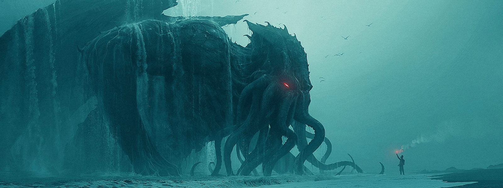

Datos del autor
Howard Phillips Lovecraft (1890-1937) fue un escritor estadounidense de relatos de terror y ciencia ficción. Se le considera un gran innovador del cuento de terror, al que aportó una mitología propia —los Mitos de Cthulhu—, desarrollada en colaboración con otros autores, actualmente en vigencia.Su obra constituye un clásico del horror cósmico, una línea narrativa que se aparta de las tradicionales historias de terror sobrenatural —satanismo, fantasmas—, incluyendo elementos de ciencia ficción como, por ejemplo, razas alienígenas, viajes en el tiempo o existencia de otras dimensiones.
Cthulhu. Una de las creaciones más populares del autor. Ilustración de Andree Wallin
Historias esenciales
- La llamada de Cthulhu
- El horror de Dunwich
- El que susurra en la oscuridad
- En las montañas de la locura
- La sombra sobre Innsmouth
- La sombra de otro tiempo
- El asiduo de las tinieblas
Dioses y criaturas en los mitos
Un tema continuo en el trabajo de Lovecraft es la total irrelevancia de la humanidad frente a los horrores cósmicos que aparentemente existen en todo el universo, con Lovecraft constantemente refiriéndose a los "Grandes Antiguos" como: un panteón suelto de antiguas y poderosas deidades del espacio que una vez gobernó la Tierra y quienes desde entonces han caído en un sueño mortal pero tenebrosamente temporal.